The feel
In a vector game everything is points connected by lines, with none of the filled shapes of a raster game.1 Jed Margolin, who worked on several of Atari's vector games, suggests they feel different because the beam draws each object whole before moving on, or simply because people remember them having far better resolution than the raster games of their day.2 Bright, crisp graphics and fast play mesmerised the arcade players who queued to feed them coins.3
What it leaves out is the point. Jay Smith, who led the Vectrex's development, said its lasting appeal is that no colour raster graphics distract the player: it is about "simplicity and the essence of game play".4 Tetsuya Mizuguchi gave Rez the vector-scan and wireframe look of older games on purpose, not out of nostalgia, because games had become so realistic that there was "no room for interpretation".5
- electric
- weightless
- exact
- cold
- hypnotic
- inside the machine
Where it comes from
Vector games reached arcades with Larry Rosenthal's Space Wars in 1977, and Atari followed in 1979 with Lunar Lander and Asteroids,3 drawing with a vector generator because memory for a frame buffer was far too expensive.2 Battlezone (1980) let players drive at will through a 3D landscape of lines,1 and Tempest added colour in 1981.2 In film, Larry Cuba made the Death Star battle plans for Star Wars on the vector graphics equipment of a University of Illinois at Chicago lab in 1976,6 and Tron (1982) grew out of Steven Lisberger's wish to bring video games to the screen, with backlit animation giving its computer world an electrical glow.7 Rez brought the look back on purpose, shaped by Kandinsky's idea that every sound has colour, dynamics and shape.5
Core elements
Points joined by lines
Every object is points connected by lines, never a filled region as in a raster game.1 The beam draws each object completely before it moves on to the next.2
Bright lines on black
Vector graphics are lines drawn point to point on a specially driven tube, and on the Vectrex that meant white lines on a black background and nothing else.8 Tron's crew shot its computer world the same way, with white vector lines on black sets, so they did not have to light everything in the frame.7
Depth shown by brightness
Battlezone does no hidden-line removal, but it dims lines to show distance.1 The phosphor keeps glowing for a moment after the beam has passed, so lines fade rather than switch off.9
Minimal line counts
Battlezone's math box worked out vanishing-point perspective for every object, and when its processors struggled, Ed Rotberg asked his graphic designer, Roger Hector, for the same shapes "in less lines, less vertices".1 Elite's models run from 4 edges for a plate of alloy to 46 for the Transporter.10
Colour overlays
Most early arcade games used black and white screens with coloured overlays to keep costs down, and every Vectrex game came with a translucent overlay that coloured parts of the screen.8 Tempest brought real colour to Atari's vector games in 1981.2
Wireframe-to-solid transitions
In Tron, objects appear as vector lines or as solids depending on how much energy they have, and they can move from place to place by de-rezzing and rezzing up somewhere else.7 Rez starts simple and evolves as you play.5
How to do it
Draw lines on black
Draw every object as lines between points on a black screen, never as filled shapes.1,8 Blend them additively, as Michael Hoffman's tutorial does for the line particles of its Geometry Wars-style shooter.11 To copy an arcade monitor, suggested vector settings use a beam width of 1.0.12
Set an edge budget
Give each model an edge budget. In Elite the Cobra Mk III has 28 vertices and 38 edges, and the Sidewinder 10 and 15.10 Watch the object count too: in Battlezone, the number of objects on screen stretched all three of its processors.1
Choose how to handle hidden lines
Battlezone leaves hidden lines in and dims distant lines instead.1 For models that look solid, do as Elite does: take the dot product of each face's normal with the line of sight and draw only the faces turned towards you.13
Add bloom around a white core
Render the scene to a target, extract everything above a brightness threshold, blur it and add it back on top.14 Hoffman's settings are a threshold of 0.25, a blur of 4, bloom intensity 2 and bloom saturation 1.5, which makes the glow more saturated than the near-white line, as in a neon tube.14 Vector games want more bloom than raster ones: emulation guidance suggests between 0.4 and 1.0.12
Add phosphor persistence
Phosphor fades rather than switching off: persistence is the time its light takes to fall to 10 percent, and the medium-short phosphors of video tubes take 10 microseconds to 1 millisecond.9 Treat ghosting as a range from 0, no ghost at all, to 1, a contrail that only a brighter colour overwrites.12 Keep it short, because a long-persistence phosphor smears when the picture updates often.9
Animate appearances and explosions
Bring objects in as lines that resolve into solids, the way Tron's objects rez up.7 For a kill, Hoffman throws 120 line particles outwards at random speeds, slows them by 3 percent a frame, stretches the fast ones and fades them out over 190 frames, just over three seconds.11 Atari's Star Wars blew up the Death Star with concentric circles and a deliberately defocused beam.2
Use single-stroke lettering
Set type as strokes, not filled outlines. The Hershey fonts, made by A. V. Hershey at the US National Bureau of Standards, build each character from vectors, with pen-up moves between strokes.15
Cheat sheet
- Screen
- Black, with white lines or an overlay tint8
- Resolution
- 1024 x 768 on Atari's digital vector generator2
- Refresh
- About 42 Hz (24 ms) in Star Wars9
- Edges per model
- 4 to 46 in Elite; the Cobra Mk III has 3810
- Persistence
- Medium-short: down to 10% in 10 microseconds to 1 ms9
- Explosion
- 120 line particles, 190 frames, speed x 0.97 a frame11
- Type
- Single strokes with pen-up moves, as in Hershey15
Do
- Ask of every shape what Rotberg asked of Battlezone's: could it be done in fewer lines and vertices?1
- Dim lines with distance to show depth.1
- Keep the core of each line near white and let the glow carry the colour.14
- Sync light and sound. Rez grew out of a rave where the sound and light were all synchronised.5
- Use colour to mark out regions of the screen, as the overlays did.8
Avoid
- Filled shapes. Vector objects are points connected by lines, not filled regions.1
- Scanlines. Vector games did not have them, and guidance for emulating vector monitors says to turn them off.12
- Stair-stepped lines. Atari's Analog Vector Generator got rid of the stairstepping of its Digital Vector Generator.2
- Long trails. A long-persistence phosphor smears when the picture updates often.9
- Culling a whole model by its centre point. In Battlezone a close object could vanish while some of its lines should still have been on screen.1
Tools and tutorials
- The Secret Life of XY Monitors
How a vector monitor's beam, deflection and phosphor work, from an engineer on Atari's XY games.9
- Back-face culling in Elite
How Elite makes wireframe ships look solid with one dot product per face.13
- Hershey Vector Font
Characters made of vectors, with the data format explained.15
- Make a Neon Vector Shooter: Bloom
Bloom settings and shaders for a Geometry Wars-style game.14
- MAME HLSL Effects
Bloom, phosphor and beam settings for emulated vector monitors.12
- Unity Line Renderer
Draws a line through a list of points in Unity.
- Godot Engine
Free, with Line2D and easy custom drawing.
- Oscilloscope music
How stereo sound steers an oscilloscope beam into pictures. Try it for your audio.16
Palette
Sampled from Battlezone, Tempest, Tron and Rez Infinite. The top of each chip is solid colour and the bottom is that colour as lines, which is how you will really see it. Press a chip to copy.
Feel the vibe
In motion
Listen
Oscilloscope music: the left channel moves the beam across and the right channel moves it up and down, so the sound draws the picture.16
YouTubeFrom Rez, which Mizuguchi first pictured as a tube with music notes flying at you, so that you shoot the sound.5
YouTubeFrom Rez. Mizuguchi wanted its music a bit trancey, to pull the player into the game.5
YouTubeFrom Tempest 2000, Jeff Minter's 1994 update of Tempest for the Atari Jaguar.17
YouTubeFrom the neon twin-stick shooter that Hoffman's tutorials take as their model.14
YouTube
More references
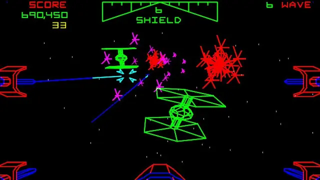
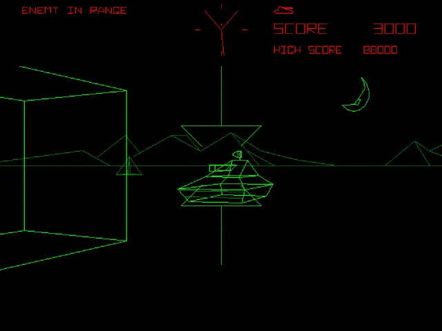
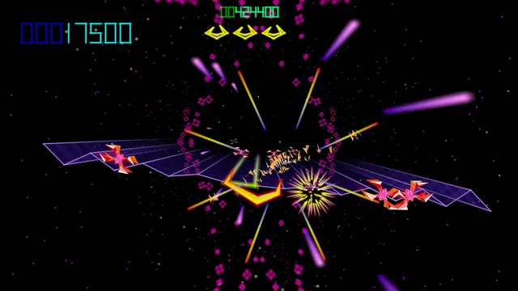
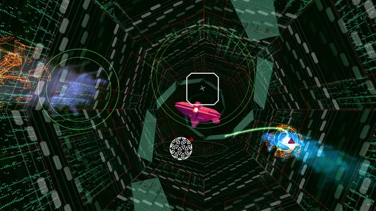
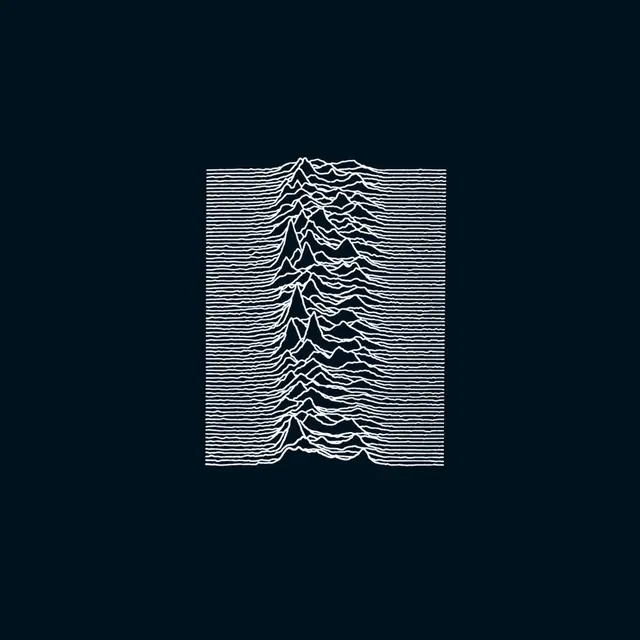
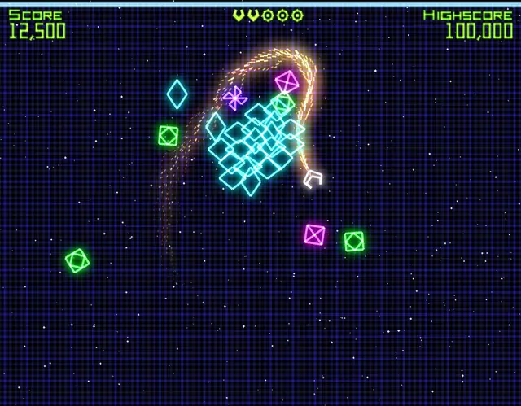
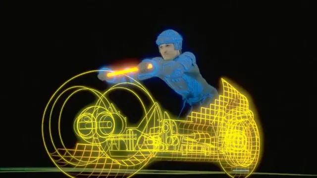
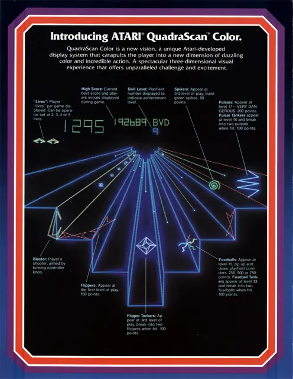
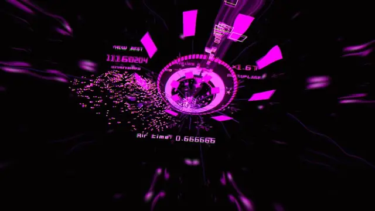
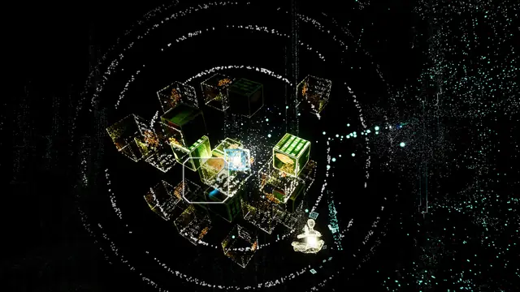
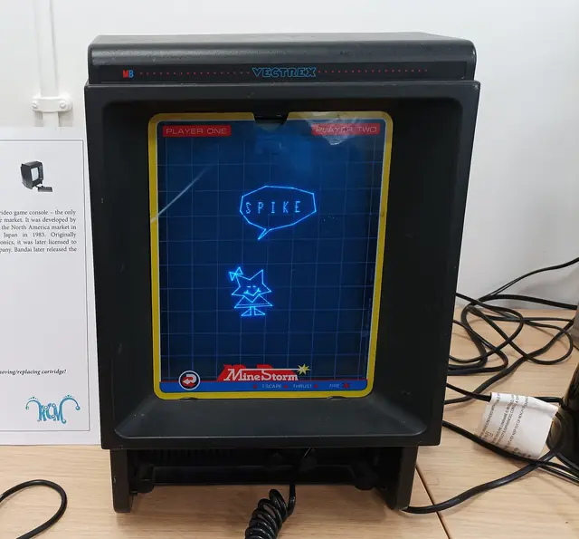
Games
- Asteroids
Drawn by Atari's digital vector generator at 1024 x 768.2 Study how little it needs.
- Battlezone
A first-person world of lines that never hides its back edges and dims with distance.1
- Tempest
Where Atari's vector games added colour, in October 1981.2 Study the tube.
- Star Wars
The trench run in colour vectors.3 The Death Star explosion defocuses the beam to fill the circles in.2
- Elite
Wireframe ships that look solid, because faces turned away from you are never drawn.13
- Geometry Wars: Retro Evolved
The game Hoffman's neon twin-stick tutorials take as their model.14 Study its bloom and particles.
- Rez Infinite
Simple at the start, evolving as you play.5 Play Area X too.
- Tempest 4000
Compare its glow and particles with the 1981 tube.
Film, art and more
- Tron
Study the shots where objects rez up from vector lines into solids.7
- Larry Cuba
Made the computer model of the Death Star that the rebels study in Star Wars, at a University of Illinois at Chicago lab in 1976.6
- Ben Laposky
Photographed electronic waves on an oscilloscope screen and called the pictures Oscillons.18
- John Whitney
His film Catalog (1961) is analogue computer animation: dotted squares, spirals and circles merging to electronic music.19
- Unknown Pleasures
A visual parallel: the sleeve's stacked plot of pulses from a pulsar was made by the radio astronomer Harold D. Craft, Jr. for his PhD thesis.20
- Vectrex
The only vector home console, with a built-in screen and a coloured overlay for each game.3,8
Sources
- 1The Invention of Battlezone
- 2The Secret Life of Vector Generators
- 3Gone, But Not Forgotten: Vector Games
- 4The Vectrex Turns 30
- 5Rez Preview
- 6Blueprints for 'Star Wars' Death Star were created at UIC
- 7The Making of Tron
- 8Retro Scan of the Week: The Art of the Vectrex Overlay
- 9The Secret Life of XY Monitors
- 10Comparing ship specifications
- 11Make a Neon Vector Shooter in XNA: Particle Effects
- 12HLSL Effects for Windows
- 13Back-face culling
- 14Make a Neon Vector Shooter in XNA: Bloom and Black Holes
- 15Hershey Vector Font
- 16Jerobeam Fenderson's Trippy Oscilloscope Music
- 17Jeff Minter
- 18Oscillon 520
- 19Catalog (John Whitney, 1961)
- 20Pop Culture Pulsar: The Science Behind Joy Division's Unknown Pleasures Album Cover